Welcher Stein passt zu meinem Geburtsdatum? Ausgehend vom Gedanken der Steinheilkunde wurden die edlen Mineralien im Mittelalter sogar zu medizinischen Anwendungen herangezogen und genossen einen hohen gesellschaftlichen Stellenwert. Mit der Einführung des gregorianischen Kalenders kam es dazu, dass jedem Monat ein Edelstein zugeordnet wurde. Sie wurden in verschiedenen Monaten oder zu besonderen Anlässen wechselnd getragen, um die wirkenden Energien der Steine zum jeweiligen Zeitpunkt zu verstärken. Für viele Menschen war es jedoch zu teuer, einen Edelstein für jeden Monat des Jahres zu tragen, und so etablierte sich der Brauch der Geburtssteine. Sie richten sich üblicherweise nach dem Geburtsdatum.
| Widder (21. März - 19. April) | Stier (20. April - 20. Mai) | Zwillinge (21. Mai - 20. Juni) | Krebs (21. Juni - 22. Juli) |
| Löwe (23. Juli - 22. August) | Jungfrau (23. August - 22. September) | Waage (23. September - 22. Oktober) | Skorpion (23. Oktober - 21. November) |
|  | |||
| Schütze (22. November - 21. Dezember) | Steinbock (22. Dezember - 19. Januar) | Wassermann (20. Januar - 18. Februar) | Fische (19. Februar - 20. März) |